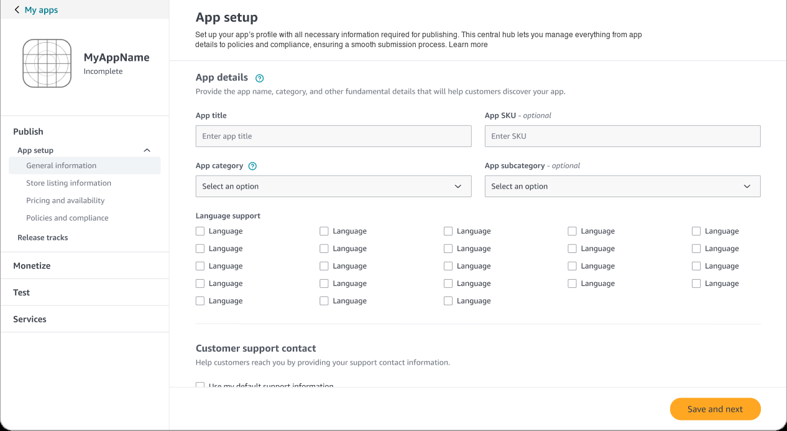
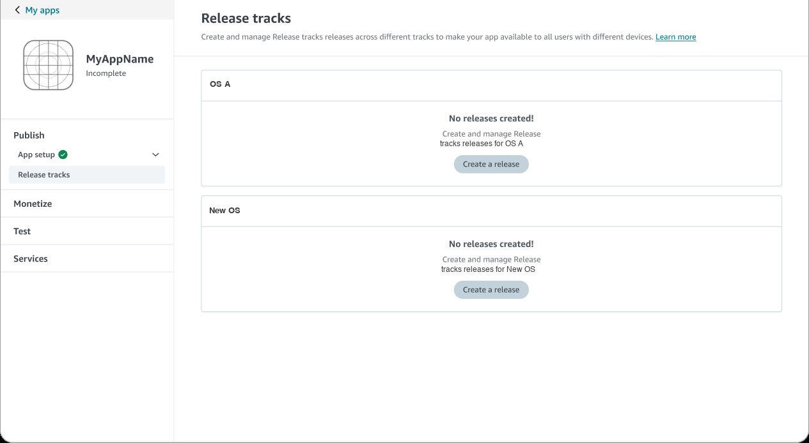
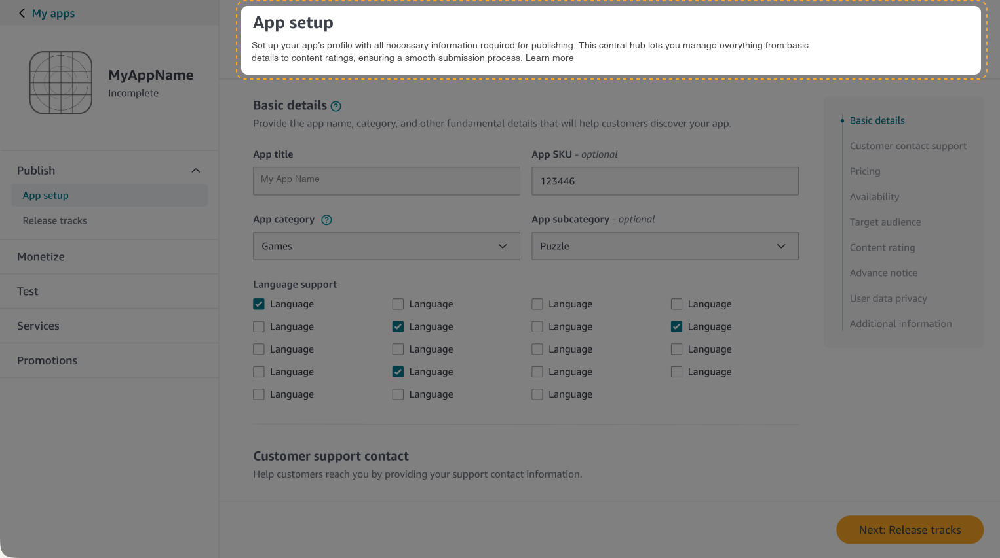
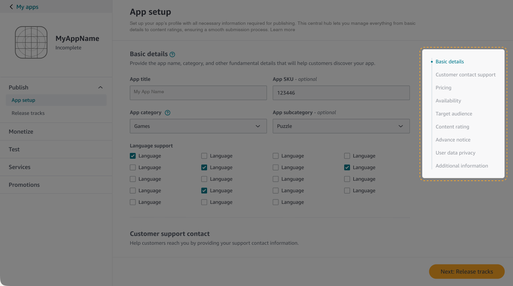
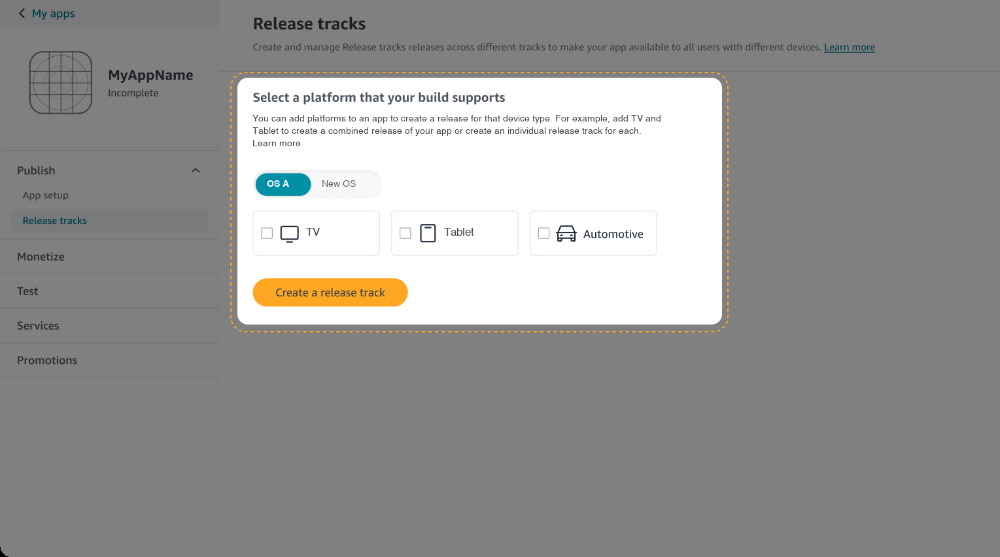
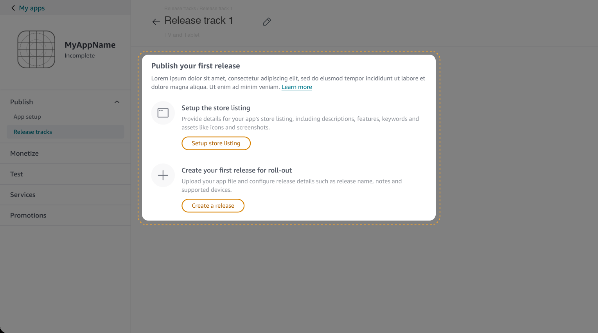
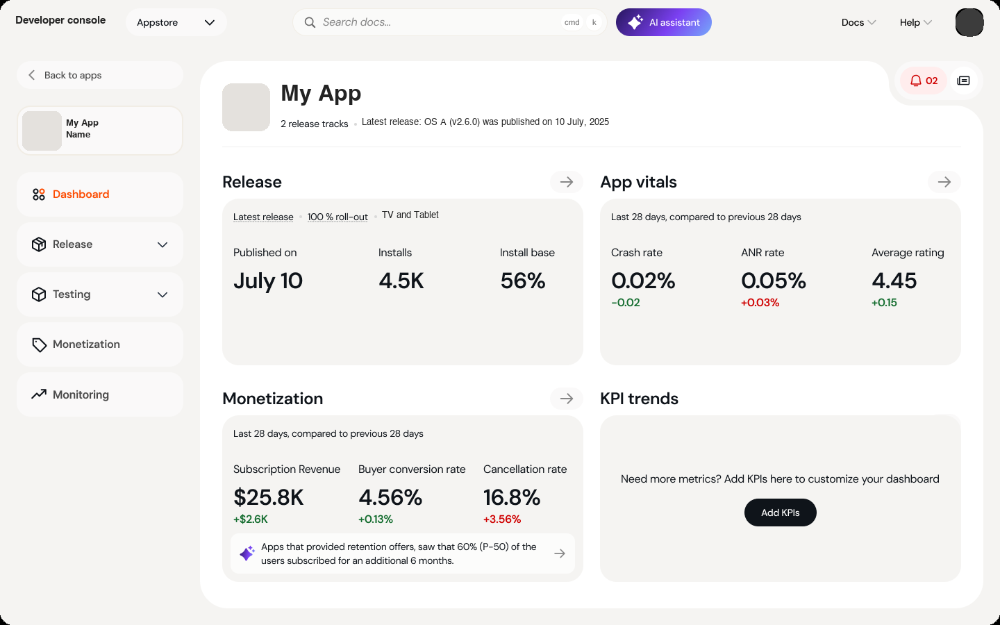
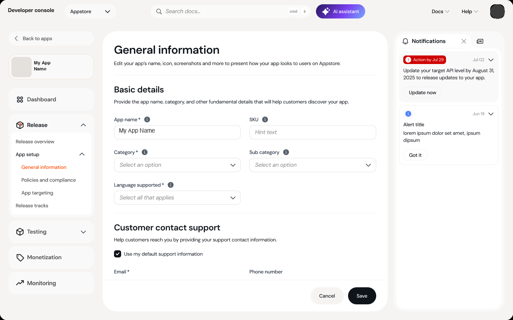
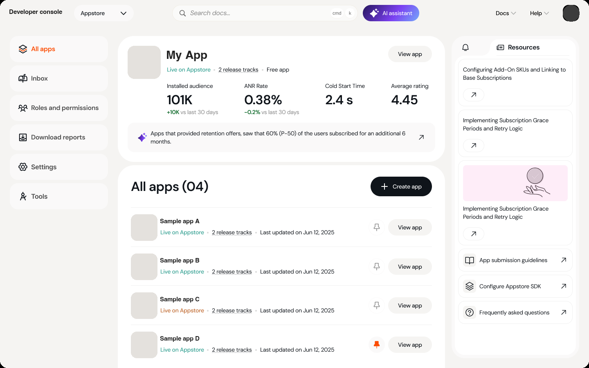

Solution
~16 minPhase 1 · Unblock: what launched
One job: stop one version from blocking another. Three moves did the work.
1 · Simplify the navigation. The four-step sequence gave way to a persistent left navigation: Publish, Monetize, Test and Services. Under Publish, App setup groups app-level material in four sections (general information, store listing, pricing and availability, policies and compliance), with Release tracks beside it. What is true of the app is set up once, in any order. Testing and monetisation became peers of publishing, not footnotes to it.

2 · Give each platform its own lane. One lane per operating system. Each starts with a clear empty state (“No releases created”) and its own Create a release action. Nothing about starting one platform’s release depends on the other, so the old “one submission at a time” rule has no place to live.

3 · Manage upcoming versions side by side. Each lane is a small table: build, supported devices, release date, status, staged roll-out, and links to status and the release. In the example one lane is live at 100% while another is in review, impossible before. Rollout was a hidden feature; now it is a column every developer reads.
Phase 2 · Let the track own its content
Two developer-experience outcomes mapped directly to the Phase 1 gaps. Both launched.
Outcome 1 · Know what data is needed, with relevance, minimal scroll, quickly. If every track and region can have its own information, the risk is a form so long nobody can find their place. The response: field-level instructions with links to technical docs, and clear indicators with quick navigation.


Outcome 2 · Set up and manage information, quickly and with confidence. Simplified track creation, and structured configuration workflows with role-based permissions so designated team members can own independent tasks. Creating a track is two choices: platform, then device types, as a combined release or a track per device type. Each track is now an object with an editable name, a line stating the devices it covers, and two independent first steps: set up the store listing, and create the first release. It also carries a release summary, Releases and Store Listings tabs, and a release history for audit and troubleshooting.


Phase 3 · Rebuild the console around the developer
A complete overhaul of the developer platform: new structure, new guidance, new design system. In progress when I left, so shown as design, not as shipped. The navigation names the work a developer does: Dashboard, Release, Testing, Monetization and Monitoring. Monitoring is new as a first-class area. The dashboard opens with “Get started setting up your app” and a checklist that answers “what should I do now?”, with specific alerts that come with a “Fix now” action, so problems are resolved in one step instead of discovered in review. Guidance sits beside the task: relevant docs, search in the header, and an always-available assistant.




The app dashboard shows the latest release with its roll-out percentage, app vitals (crash rate, ANR rate, rating, 28 days against the previous 28), monetisation, and a KPI area the developer fills. Setup keeps the Phase 1–2 structure inside the new navigation, with urgent items (such as an API level due before updates can ship) shown beside the form with a direct action. The home screen treats a developer with several apps as the norm. The new design system matches the marketplace’s own devices, so there is no visual break between the hardware developers build for and the console they build in. It was as much a product decision as a visual one: building on shared components kept structure, guidance and look consistent.
The decisions that shaped it
1 · Separate the app from its releases. Four steps became two places: app and store details, and the release. Why: separates marketing content from the release, so a copy edit no longer rides along with a binary. Constraint: engineering’s back-end concern made this the lighter structural change.
2 · Group by the jobs developers do. Publish, Monetize, Test, Services. Why: testing and in-app items sat outside the path developers walked, and test builds were blocked. The card sort also pointed to a structure developers already knew.
3 · Lanes by OS first, then by device. An OS boundary is the cleanest line: packages are incompatible, so lanes can never collide. Device-level tracks add control but also states to manage, so they came after.
4 · Make rollout a column, not a feature. A separate setting still has to be discovered; a column is seen every time a developer looks at their releases. Clarity, not extra controls.
5 · Let a long form show where you are. A section index turns a scroll into a map as listings and regions multiply.
6 · Make the track an object that owns things. At launch a track was only a lane. Giving it a listing, history and its own tabs is what the earlier decisions were leading to.
Making release a first-class journey
Rollout. Release controls let developers choose an immediate publish, a fixed future date, or manual publishing after approval. Partial or full rollout is chosen up front and shown as a column, so a developer sees at once whether a release is at 100%.
Testing without being blocked. Testing has its own route: choose what to test with (a developer-test option, or a physical device farm) and add testers manually or by upload. A test release no longer waits for production review. Production release setup stays locked until mandatory information is complete, so nobody reaches the final step with gaps.
An onboarding path that isn’t a straight line. First-time setup is four groups: app basics, monetisation, release track and release, with early dev testing in parallel. Monetisation can be skipped, payment details can come later, and “Save and exit” is always available.
- Walk Phase 1 as three moves with the three screens. It is the clearest before/after in the talk.
- Phase 2: emphasise that the same app/release separation was applied again, one level down, to each track.
- Phase 3: be explicit that it is design, not shipped. Use the decisions list as your Q&A prompts, and cut it first if time is short.